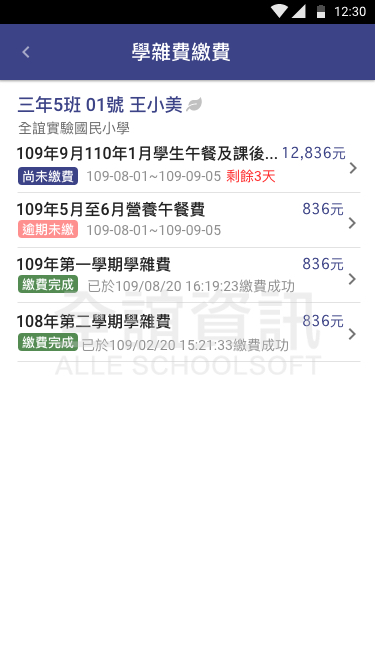
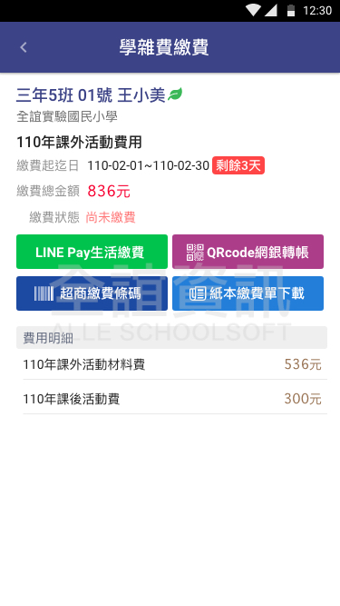
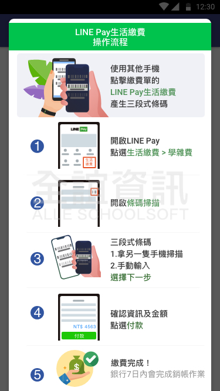
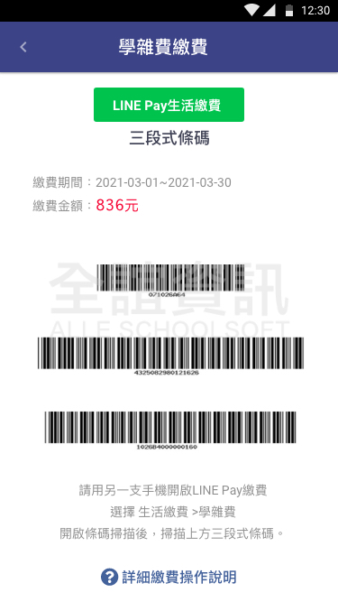

<div class="APP_application_list_class">
    <div class="APP_application_list_title">
      <span class="APP_application_list_title_left">
        <h4>學雜費繳費</h4>  
      </span>
      <span class="APP_application_list_title_right">
        <span class="APP_list_user APP_user_green">
          老師
        </span>
        <span class="APP_list_user APP_user_red">
            家長
        </span>
      </span>
      <div class="clear"></div>
    </div>
  
    <div class="APP_application_list_words">
        讓家長用手機即可繳交學雜費的功能，提供LINE Pay、QRcode網銀轉帳、超商繳費條碼及紙本繳費單下載列印，讓家長選擇習慣的繳費方式，老師也可查看家長的繳費情形。
    </div>
  
    <div class="APP_application_list_pic">
      <span class="APP_list_pic_margin">
        
      </span>
      <span class="APP_list_pic_margin">
        
      </span>
      <span class="APP_list_pic_margin">
        
      </span>
      <span class="APP_list_pic_margin">
        
      </span>
    </div>
  </div>
  